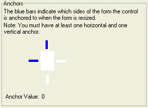
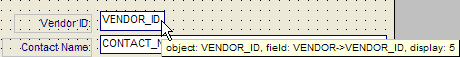
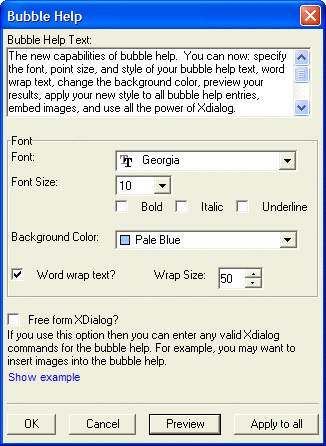
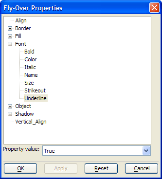

Setting Control Properties
When you place a table field or calculated value on a layout, by default the new control has a Field Type of "Type-in Field". There are many other display modes for a control that provide special features.
Field Type | Use this control to ... |
Type-in Field | support the normal display and editing of text, number, date, time, and logical fields. |
Combo Box | display a drop-down list of choices. |
List Box | display an expanded multi-line list of choices. |
Radio Button | select a single value from a small number of choices. |
Multi | select one of multiple choices. |
Tree Control | organize and display an expanded multi-line hierarchy of structured choice values. |
Drop-down Tree | organize and display a drop-down hierarchy of structured choice values. |
Record List - List Box | display an expanded multi-line list of field values in a table. |
Record List - Combo Box | display a drop-down list of field values in a table. |
Record List - Edit Combo Box | display an editable drop-down list of field values in a table. |
Two | select one of two choices. |
Check Box | select one of two choices. |
open your email client and place the field contents in the TO address line. | |
Email | open your Alpha Five email client and place the field contents in the TO address line. |
Expression Builder | open the <span class=Screen>Expression Builder</span> and display the resulting expression. |
Field Select | select a field from the current table. |
File Select | select a file and display its drive, path, and filename. |
Filter Builder | open the <span class=Screen>Filter Builder</span> and display the resulting expression. |
Order Builder | open the <span class=Screen>Order Builder</span> and display the resulting expression. |
URL | display a URL and open it in your default browser. |
This feature allows the control to be reduced in size when printing the form.
Select the control, choose Object > Properties and display the Setup tab.
Check Allow Shrinking.
This feature allows the user to input and edit values without putting the form into edit mode.
Select the control, choose Object > Properties and display the Setup tab.
Check Allow Modeless.
This feature keeps the control on top of other controls. This feature is useful when controls may be layered.
Select the control, choose Object > Properties and display the Setup tab.
Check Always on Top.
This feature sets the various characteristics of the font that the control uses to display its data. The Sample area at the bottom of the Field Properties dialog previews your selection.
Select the control, choose Object > Properties and display the Font tab.
Optionally, select a font from the Face list.
Optionally, select or enter an integer value for the Size of the font.
Optionally, check the Bold, Italic, Underline, and Strikeout style check boxes.
Optionally, select a color from the Color list.
Refer to Defining Border Style and Color.
Refer to Defining Shadows.
Refer to Defining Fill Style and Color.
By default the text in a data field is top and left aligned.
Select the control, choose Object > Properties and display the Format tab.
Set the Horizontal Alignment by clicking Left, Center, or Right.
Set the Vertical Alignment by clicking Top, Center, or Bottom.
Optionally, check Word Wrap to allow text to use more than one line. You must resize the control to make the extra lines visible.
The number of characters displayed on the form is not necessarily the same as the length of a field.
Select the control, choose Object > Properties and display the Format tab.
Enter or select a value in the Width field to set the number of display characters. This value includes the decimal point and numbers to the right of the decimal point.
In the case of numeric fields, enter or select a value from the Decimal Places field.
Optionally, select a Format Style. Refer to Display Formats.
Before setting a control's dimensions, you may want to change your unit of measurement settings. You may also set the control's position and size interactively. Refer to Sizing Objects.
Select the control, choose Object > Properties and display the Dimensions tab.
Enter or select a value in the Left field to set the horizontal location of the control on the form.
Enter or select a value in the Top field to set the vertical location of the control on the form.
Enter or select a value in the Width field to set the width of the control on the form.
Enter or select a value in the Height field to set the height of the control on the form.
Enabling Dynamic Control Resizing
Alpha Five Version 6 allows you to stretch and move form controls as the form is resized. The key benefit of this feature is that you can create forms that will look well designed regardless of the screen resolution (e.g. 800 x 600 or 1024 x 768 pixels).
 Note : The form's Window properties must have the following two settings in the size area.
Note : The form's Window properties must have the following two settings in the size area.
Width = Use Form's Width
Height = Use Form's Height
Click the horizontal and vertical lines of the anchor to turn them on and off. There must always be one vertical (top or bottom) and one horizontal (left or right) anchor point turned on.

Anchors Selected | Effect When Form Resizes |
Left, Top | Unchanged |
Right, Bottom | Moves right and down |
Right, Top | Moves right |
Left, Bottom | Moves down |
Left, Right, Bottom | Stretches horizontally and moves down |
Left, Right, Top | Stretches horizontally |
Right, Top, Bottom | Stretches vertically and moves right |
Left, Right, Top, Bottom | Stretches horizontally and vertically |
Changing the Field Description
Select the control, choose Object > Properties and display the Setup tab.
Optionally, change the Object Name. By default, the object name is the same as the table data field name. It is often useful to change this name to distinguish it from the underlying data field.
Optionally, change the data Field that is bound to the control.
Click to display the Field Select dialog box.
Select the table from the Table list.
Select the field from the Available Fields list.
Click OK to continue or Cancel to discard your inputs.
Optionally, change the variable that is bound to the control.
Click to display the Field Select dialog box.
To use an existing variable, select "Var" from the Table list.
Optionally, click Add Variable to display the Add Variable dialog box. Specify the Scope, Data Type, and Name of the new variable and click OK.
Select the variable from the Available Fields list.
Click OK to continue or Cancel to discard your inputs.
Optionally, change the calculated field that is bound to the control.
Click to display the Field Select dialog box.
To use an existing variable, select "Calc" from the Table list.
Select the calculated field from the Available Fields list.
Click OK to continue or Cancel to discard your inputs.
Optionally, change the system field that is bound to the control.
Click to display the Field Select dialog box.
To use an existing variable, select "System" from the Table list.
Select the system field from the Available Fields list.
Click OK to continue or Cancel to discard your inputs.
Optionally, change the Field-Type. Refer to Selecting a Field Data Control to understand the characteristics of the different options.
Click
 to display the different control formats.
to display the different control formats.Depending on the type of control selected, display the Choices tab and enter required information.
Enabling and Disabling Miscellaneous Properties
Select the control, choose Object > Properties and display the Setup tab.
Optionally, check Read Only if you do not want the user to be able to change the value of the field.
Optionally, clear Tab Stop if you do not want the user to be able to tab to the field.
Optionally, check Always on Top if you want the field to always be on top of any other layered controls.
Optionally, check Always Modeless if you want the user to be able to edit the field without putting it in change mode.
Optionally, check Hide if you want to make the field invisible.
Optionally, check Disable if you do not want the user to be able to edit or select the data in the field.
Optionally, check Allow Shrinking if the field can be made smaller during printing.
Optionally, check Don't Spell Check if you do not want the field to be eligible for spell checking.
Specifying the Right-Click Menu
Select the control, choose Object > Properties and display the Menus/Toolbars tab.
Click
to select an existing toolbar from the Right-Click Menu list.Optionally, click Set All Fields to apply this toolbar to all fields on the form.
When the user presses F1, you have the option of displaying a help topic from an Alpha Five help file or a compiled help file in the .CHM or .HLP formats.
Choose Object > Properties and display the Help Entry tab.
Check Use Custom Help.
Make a selection from the Help Source File list. The options are:
- "Standard Windows Help File (.hlp file)"
- "Compiled Windows Help File (.chm file)"
- "Alpha Five Help File"
If you selected either "Standard Windows Help File (.hlp file)" or "Compiled Windows Help File (.chm file)", refer to Linking to a External Help File Topic.
If you selected "Alpha Five Help File", refer to Creating Alpha Five Help Text.
Alpha Five displays Bubble Help when the cursor is over an object on a layout.

Bubble Help shows the object name and object type. With field objects, it shows the name of the field that the object is bound to, the display size of the object, and the size of the field. You can toggle Bubble Help on or off with the View > Object Bubble Help command.
Choose Object > Properties and display the Help Entry tab.
Optionally, check Free form XDialog if you would like to add images or other Xdialog controls to the bubble help.
If you checked Free form XDialog :
Enter Xdialog code into the Bubble Help Text field.
Click Preview to see how the bubble help will appear.
If you did not check Free form XDialog :
Optionally, enter the help text into the Bubble Help Text field.
Optionally, click Edit... to display the Bubble Help dialog box.

Enter the help text into the Bubble Help Text field.
Optionally, change the Font, Font Size, Bold, Italic, and Underline field settings.
Optionally, enable word wrap by checking Word Wrap Text?.
Optionally, change the default line length by entering or selecting a new value in the Wrap Size field.
Click Preview to see how the bubble help will appear.
Optionally, click Apply to all to set this as the bubble help for all fields on the form.
Click OK to save your changes or Cancel to exit.
You can temporarily change many of a control's properties when the mouse moves over it. The control's properties revert to their normal state when the mouse moves away from it.
Choose Object > Properties and display the Setup tab.
Check Fly-over Effects and click Set Fly-over Appearance to display the Fly-Over Properties dialog.

Expand the properties list as necessary and select the property you want to change.
Select the fly-over value from the Property value list at the bottom of the dialog.
Click OK to apply your changes or Cancel to quit without making any changes.